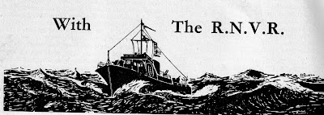
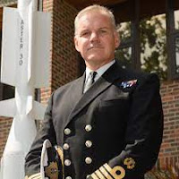
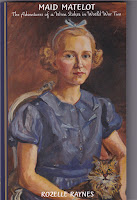
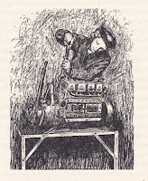

 |
| Heading from Yachting Monthly 'RNVR Journal' 1940-45 |
.jpg){kind=link}
Since the publication of Uncommon Courage: the Yachtsmen Volunteers of WW2 I’ve become more and more aware how little I know. I worked hard to research the book and can confidently say that I left out much more than I put in. That’s not hard when you’re researching from memoirs, lists, websites and histories. The source material fills several shelves; the book itself is a single volume. Even my bibliography had to be rigorously selective – only including the books I’d used directly in the finished product, not everything else I’d read along the way.

As it was, I got into trouble with the publishers for going over the contracted word count. I hadn’t fully realised how tightly managed their budgets must be and the extent to which rapidly rising paper costs could threaten the viability of a project. I felt rather sorry and amateur when I delivered 15k excess words – but I still fought like a pitbull for my Right to an Index. Hopes of illustrations, maps, chatty little footnotes sank without trace – along with too many of the Yachtsmen Volunteers themselves. I’m not complaining, you understand. I was so glad to be published NOT by me. Cuts almost always make a better book. But there were regrets – and the undeniable truth that I’d only been scratching the surface of the subject, however hard I’d worked.
Pearce Trewella Lovelock was one of the RNVSR members confined to a name in a list in the slimline endnotes. I was delighted and chagrined when one of the first people to show an interest in reviewing the book was the writer and editor Julian Lovelock who I knew from his work with the Arthur Ransome Society but hadn’t realised was the son of an RNVSR Yachtsman Volunteer. He put me in touch also with his brother David who had already undertaken some detailed research into their father’s life and ensured he has an entry in the Royal Naval Research Archive
http://www.royalnavyresearcharchive.org.uk/People_Lovelock.htm#.YsUf51zMKW8
The Lovelocks knew far more than I did, as they also knew that there is a website recording details of WW2 activity at HMS Wildfire, Sheerness to which their father was posted in November 1939. It’s relevant to other Yachtsmen Volunteers as well.
http://www.wildfire3.com/wildfire.html
In the summer issue of Marine Quarterly magazine Julian Lovelock has written a generous article in which he expresses gratitude to Uncommon Courage for stimulating interest in this group of wartime volunteers – the amateur sailors who put their names forward to serve ‘in case of emergency’. I rather think the gratitude should be the other way round. Julian Lovelock comments, fairly, on my reliance on written sources and says ‘familiar names sometimes steal the show’. This was certainly a danger and I tried quite hard to maintain a balance with the less well-known. I wholeheartedly agree with Julian Lovelock’s observation: ‘There is, however, just as much interest in the stories of less famous combatants, who, after the war would return to anonymous jobs and perhaps a little weekend sailing – if that is they had been lucky enough to last the course. Countless other memories must lie undiscovered and unspoken.'{kind=link}
So that put
the thought in my mind that there should be some accessible point where the
discoveries of others could be shared. One of the pleasures of being invited to
give talks about the book is the people who comment afterwards, bringing their
own family knowledge of the period. But there’s never enough time to have a
proper conversation and my brain won’t always retain all the detail.
This happened at the Little Ship Club early in May. It was thrilling to discover that the member who’d been deputed to introduce me had his own independent memories of HMS Forth, the depot ship which was my father’s first posting. His father had served there and he remembered her from a childhood in Malta. There were also members of the RNVR Yacht Club who were guests for the evening - a direct link to the service the Yachtsman Volunteers had joined. Too much for me to take in.
The following day the LSC archivist Ian Stewart invited me to have lunch with another former speaker, Captain Chris O’Flaherty who has recently published a book about RNVR member Jake Wright, a tea merchant who served with Coastal Forces during WW2. I’d already read and enjoyed Torpedoes Tea and Medals and reviewed it later for Yachting Monthly. As an East Coast sailor I particularly relished the detail about life at HMS Beehive, the Felixstowe base from which small groups of MGBs and MTBs emerged at nightfall to engage with the German e-boats and harry their convoys along the coasts of Holland, Belgium and northern France, as the Germans were attacking the British East Coast convoys. The history of that base is one I’d especially like to follow up.
{kind=link}
Before we met Chris had had sent a generous message to our host at the Little Ship Club in which he mentioned my accumulation of ‘a locker of dits’. This was a word I connected with the old fashioned seaman’s ‘ditty bag’ in which scraps of material and potentially useful bits and pieces might be stored but also with ‘on dit’, one says, a fragment of news or whiff of scandal. It makes me think of the powerful and censorious dowagers in Georgette Heyer novels. Chris accepts dits as part of the professional seaman's repertoire.
'Sailors are a wonderful and unique breed of human,' he writes. 'On the one hand they will amaze you by fixing the unfixable, solving the unsolvable, achieving the unachievable and simply getting on with whatever is required to deliver success. On the other they will amaze you with tales -- known in the Navy as 'dits' -- of activities and adventures that are remarkable and often seemingly unfeasible -- especially so for their many dits (or excuses) that involve members of the opposite sex.'
I don’t think Chris was casting any aspersions on the collection of anecdotes and experiences which lie at the heart of Uncommon Courage. It was fascinating to hear him use the word quite naturally in conversation, usually when he himself had a tale to tell which he considered particularly illustrative or important. Very often his use of language backed up his claim
that there are aspects of the Navy which haven’t changed all that much since
Nelson’s time.
 |
| Captain Chris O'Flaherty at the Little Ship Club |
{kind=link}
So I’d like to use the Golden Duck website to offer a space where people can share their ‘dits’ – not their tall tales, excuses or unsubstantiated gossip (!) but their valuable pieces of personal knowledge, research and expertise. I hope other relatives of the WW2 Yachtsmen Volunteers will join me. We can bring some more individual histories and photos out of their storage in attic suitcases and the failing memories of descendants, to a place where their achievement can be recognised. We can also exchange practical research advice, book and website recommendations.
This is how
I think it might work.
My son
Bertie has made a new page on the Golden Duck website using a header from the
Yachting Monthly’s wartime section News from the RNVR. YM's current editor Theo
Stocker has given permission for this and I believe that this aspect of the magazine's heritage is something in which the
magazine should feel pride. I have really enjoyed using old copies of YM for research and
will be writing about this as one of my first posts.
The page is set up as a blog which means contributions should be easily shareable. There will be a facility to comment. I will happily add some of the pictures and additional pieces of information which I had to discard or have gleaned since publication and I very much hope that others will do the same. Initially text and images should be sent to me (julia@golden-duck.co.uk) and either I or the ever-helpful Bertie will put them up.
Bertie is
developing a system whereby people can receive an email alerting them to new
posts. I think we should aim to ensure that there is at least one such
email a month, irrespective of the number of posts. If we commit to continue this project for at least a year (by which time Uncommon Courage will have gone into
paperback) we will have a fair idea as to whether this is a useful facility. If it is, we'll carry on.
And finally, although my research began specifically with the RNVSR, I don’t think our site should be
confined to that group. The 'supplementaries' were pre-war volunteers so were already men of a
certain age (even though that seems very young). When they received their
commissions they became straightforwardly RNVR. As the war continued other,
younger men came forward to join the RNVR, many of whom became yachtsmen after the war. There
were women too, as the WRNS developed more active roles. Think of 65152 Wren Stoker Pierrepont, better known later as cruising sailor and philanthropist Lady Rozelle Raynes.
 |
| Lady Rozelle - painted by her mother (front cover, new edition, pub date 25.8.2022) |
{kind=link}
 |
| Wren Stoker Pierrepont - drawn by herself |
{kind=link}
My personal example of a younger Yachtsman Volunteer would be Stewart Platt (b 1923) pre-war sea scout, aged 20 on D-day then, many years later President of the Cruising Association. In my current email correspondence, I have a message from CA member John Young from Christchurch Sailing Club hoping to research the naval career of talented helmsman Eddie Mossop who sailed from Christchurch in 1951 to compete in the Sydney-Hobart race. Mossop’s yacht Katwinchr was the oldest and smallest ever to compete in the history of the race and sailed as a member of the RNSA. John Young would like advice on lists and websites. Perhaps he’ll find the new web page helpful and share any discoveries he makes.
‘Grab a chance and you won’t be sorry for a
might-have-been.’
If you’d
like to be part of this project – either as a reader or potential contributor
-- please send me an email with DITTY LOCKER in the subject line and we’ll
supply step-by-step instructions (not too many we hope)
{kind=link}